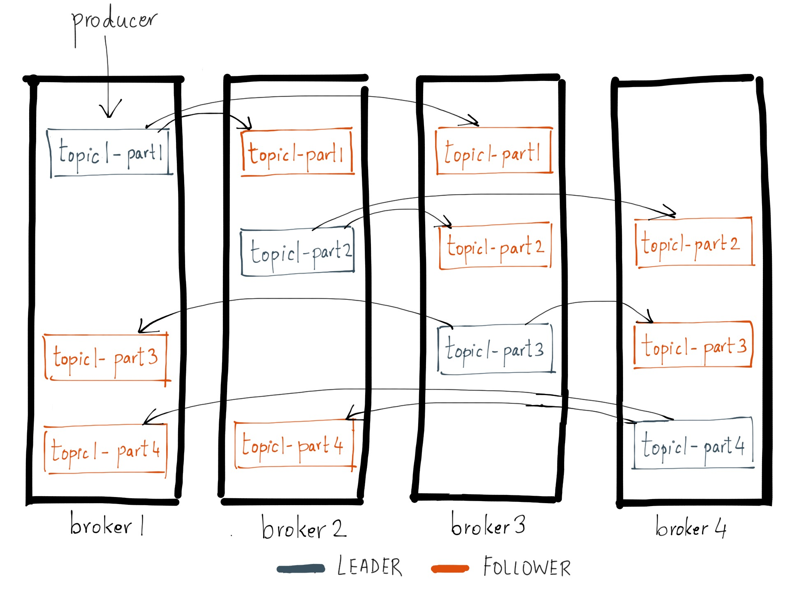
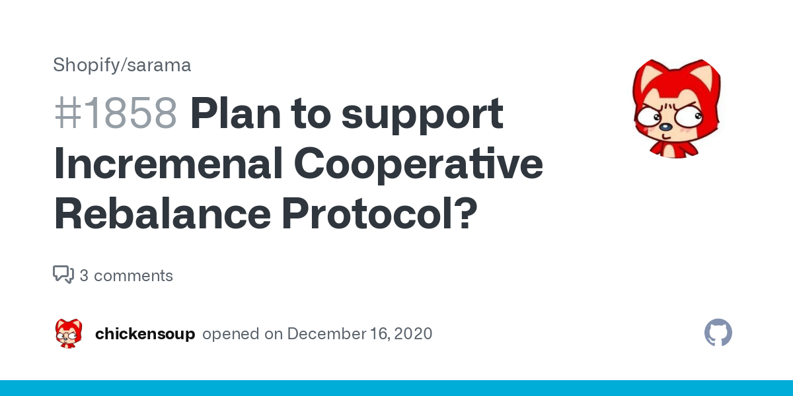

Inside Kafka Consumer-Group Mechanism
MORVAN Pierre
WHO AM I?
Pierre Morvan @Zenika Paris
@ryarnyah
OVERVIEW KAFKA

Topics
Partition

Consumer-group
REBALANCE PROTOCOL

Overview protocole Kafka
- Full Asynchrone
- Requete / Réponse
- Retro-compatible ascendant/descendant
- Documenté à partir du code
- Binaire & Normalisé
- API Java (et autre disponible)
Overview protocole Kafka - API Java
private static final Schema SCHEMA = new Schema( new Field("version", Type.INT16), new Field("nom", Type.STRING), new Field("list-nom", new ArrayOf(Type.STRING) );
Donne une trame
[2 bytes][2 bytes pour taille nom][...nom...][4 bytes pour nombre de list-nom][...list-nom...]
Overview protocole Kafka - Async
Consumer-group protocole
| Description | |
|---|---|
| JoinGroupRequest | Requete envoyé par les client pour soit demander un nouveau rebalance, soit rejoindre le groupe demandé. |
| JoinGroupResponse | Réponse contenant la liste des membres, l'identifiant du membre courant du groupe ainsi que l'identifiant du leader groupe. |
| SyncGroupRequest | Requete demandant au broker de récupérer les assignations que le leader à faite. Dans le cas du leader du groupe, celui-ci envoit les assignations. |
| SyncGroupResponse | Récupération des assignations faites par le leader du groupe. |
| LeaveGroupRequest | Requete envoyé par le client lorsqu'il quitte le groupe. Permet au broker de réagir instantanément et de provoquer un rebalance dés le prochain poll. |
| LeaveGroupResponse | Réponse associée. |
JoinGroup
JoinGroupRequest
/** identifiant du groupe. */ String groupId; /** identifiant du membre si connu. */ String memberId; /** Type du protocole. */ String protocolType;
JoinGroupResponse
/** Identifiant de la génération du groupe (incrémenté à chaque rebalance) */ int generationId; /** Type du protocole. */ String protocolType; /** Nom du protocole. */ String protocolName; /** Identifiant du leader. */ String leader; /** Identifiant du membre. */ String memberId; /** Metadata des membres du cluster. */ List<JoinGroupResponseMember> members;
SyncGroup
SyncGroupRequest
/** Identifiant du groupe. */ String groupId; /** Identifiant de la génération. */ int generationId; /** Identifiant du membre. */ String memberId; /** Type du protocole. */ String protocolType; /** Nom du protocole. */ String protocolName; /** Assignation au format memberId/assignment (uniquement le leader). */ List<SyncGroupRequestAssignment> assignments;
SyncGroupResponse
/** Type du protocole. */ String protocolType; /** Nom du protocole. */ String protocolName; /** Assignment envoyé par le leader. */ byte[] assignment;
EAGER Flow
EAGER flow
Cooperative Flow
Cooperative Flow - Perte d'un membre
Cooperative Flow - Réintégration
CONSTRUISONS NOTRE COORDINATEUR
Mais pourquoi? Pour quel use-cases?
- Instance d'un service responsable d'un lancement d'un batch
- Distribution d'une serie de taches à une liste d'instances de taille variable (ex: auto-scalling)
- Partitionnement de traitements associées à une donnée partitionnable (membre modulo nombre de membres)
- …
Let's Go
Protocol - Assignment
public class AssignmentProtocol { private String leaderId; private int generationId = -1; private byte[] assignedTasks = new byte[0]; /** Header */ private static final short PROTOCOL_V0 = 0; private static final String VERSION_KEY_NAME = "version"; private static final Schema TASK_PROTOCOL_HEADER_SCHEMA = new Schema( new Field(VERSION_KEY_NAME, Type.INT16, "Schema version")); private static final Struct PROTOCOL_HEADER_V0 = new Struct(TASK_PROTOCOL_HEADER_SCHEMA) .set(VERSION_KEY_NAME, PROTOCOL_V0); /** Schema */ private static final String LEADER_ID_KEY = "leader_id"; private static final String ASSIGNED_TASKS_KEY = "assigned_tasks"; private static final String GENERATION_KEY = "generation_key"; private static final Schema SCHEMA_V0 = new Schema( new Field(GENERATION_KEY, Type.INT32, "Generation of assignment"), new Field(LEADER_ID_KEY, Type.STRING, "MemberId of group leader", ""), new Field(ASSIGNED_TASKS_KEY, Type.BYTES, "Current groups assigned") ); /** ... */ }
Coordinator - Listener
public interface AssignmentListener { default AssignmentProtocol onAssigned(String memberId, AssignmentProtocol assignment, String leaderId, int generation) { return assignment; } default AssignmentProtocol onAssignmentRevoked(String memberId, AssignmentProtocol assignment) { return assignment; } default AssignmentProtocol onAssignmentLost(String memberId, AssignmentProtocol assignment) { return onAssignmentRevoked(memberId, assignment); } default Map<String, AssignmentProtocol> assign(String leaderId, Map<String, AssignmentProtocol> memberConfigs) { return memberConfigs; } /** * <code>true</code> if rejoin is needed. */ default boolean isRejoinNeeded() { return false; } }
Coordinator - JoinGroup
public class AssignmentCoordinator extends AbstractCoordinator implements Closeable { /** * Type de protocole. */ private static final String PROTOCOL_TYPE = "assign"; /** * Sub-type de protocole. */ private static final String SUB_PROTOCOL_TYPE_V0 = "assign_v0"; private AssignmentProtocol assignmentSnapshot = new AssignmentProtocol(); @Override protected String protocolType() { return PROTOCOL_TYPE; } @Override protected JoinGroupRequestData.JoinGroupRequestProtocolCollection metadata() { return new JoinGroupRequestData.JoinGroupRequestProtocolCollection( Collections.singletonList(new JoinGroupRequestData.JoinGroupRequestProtocol() .setName(SUB_PROTOCOL_TYPE_V0) .setMetadata(assignmentSnapshot.serialize().array())).iterator()); } }
Coordinator - JoinGroup
public class AssignmentCoordinator extends AbstractCoordinator implements Closeable { /** ... */ @Override protected void onJoinPrepare(int generation, String memberId) { try { if (generation == Generation.NO_GENERATION.generationId && memberId.equals(Generation.NO_GENERATION.memberId)) { LOGGER.info("Giving away assignment as lost since generation has been reset," + "indicating that client is no longer part of the group"); listener.onAssignmentLost(memberId, assignmentSnapshot); /** Reset snapshot when assignment lost */ assignmentSnapshot = new AssignmentProtocol(); } else { LOGGER.debug("Revoking previous assignment {}", assignmentSnapshot); listener.onAssignmentRevoked(memberId, assignmentSnapshot); } } catch (WakeupException | InterruptException e) { throw e; } catch (Exception e) { throw new KafkaException("User rebalance callback throws an error", e); } } }
Coordinator - SyncGroup
@Override protected Map<String, ByteBuffer> performAssignment(String leaderId, String protocol, List<JoinGroupResponseData.JoinGroupResponseMember> allMemberMetadata) { LOGGER.debug("Performing assignment"); Generation generation = generation(); /** ... */ LOGGER.debug("Member information: {} Assignments: {}", memberConfigs, assignments); return assignments.entrySet() .stream() .collect(Collectors.toMap( Map.Entry::getKey, e -> AssignmentProtocol.serializeAssignment(e.getValue()))); }
Coordinator - SyncGroup
public class AssignmentCoordinator extends AbstractCoordinator implements Closeable { /** ... */ private int previousAssignmentGenerationId = Generation.NO_GENERATION.generationId; /** ... */ @Override protected void onJoinComplete(int generation, String memberId, String protocol, ByteBuffer memberAssignment) { try { assignmentSnapshot = AssignmentProtocol.deserializeAssignment(memberAssignment); if (generation != Generation.NO_GENERATION.generationId && assignmentSnapshot.getGenerationId() != Generation.NO_GENERATION.generationId && generation != assignmentSnapshot.getGenerationId()) { LOGGER.warn("assignment generation-id {} mismatch current generation-id {}", assignmentSnapshot.getGenerationId(), generation); requestRejoin("assignment generation-id mismatch current generation-id"); } listener.onAssigned(memberId, assignmentSnapshot, assignmentSnapshot.getLeaderId(), generation); } catch (WakeupException | InterruptException e) { throw e; } catch (Exception e) { throw new KafkaException("User rebalance callback throws an error", e); } finally { previousAssignmentGenerationId = generation; } } }
Coordinator - Poll
public class AssignmentCoordinator extends AbstractCoordinator implements Closeable { /** .. */ public void poll(Timer timer) { if (coordinatorUnknown() && !ensureCoordinatorReady(timer)) { throw new TimeoutException("timeout on waiting for coordinator"); } if (rejoinNeededOrPending()) { ensureActiveGroup(); } pollHeartbeat(timer.currentTimeMs()); do { client.poll(timer); } while (assignmentSnapshot.getLeaderId() == null && timer.notExpired()); if (timer.isExpired()) { throw new TimeoutException("timeout on waiting for assignment"); } timer.update(); } }
Exemple de Listener - Leader
public class LeaderListener implements AssignmentListener { private Boolean isLeader = null; @Override public AssignmentProtocol onAssigned(String memberId, AssignmentProtocol assignment, String leaderId, int generation) { isLeader = memberId.equals(leaderId); return AssignmentListener.super.onAssigned(memberId, assignment, leaderId, generation); } @Override public AssignmentProtocol onAssignmentLost(String memberId, AssignmentProtocol assignment) { isLeader = null; return AssignmentListener.super.onAssignmentLost(memberId, assignment); } @Override public boolean isRejoinNeeded() { return isLeader == null; } public boolean isLeader() { return isLeader != null && isLeader; } }
Exemple de Listener - Round-Robin Distribute
public class ListStringListener implements AssignmentListener { private Set<String> valueAssigned = null; /** ... */ @Override public Map<String, AssignmentProtocol> assign(String leaderId, Map<String, AssignmentProtocol> memberConfigs) { Map<String, Set<String>> assignments = memberConfigs.entrySet().stream().collect(Collectors.toMap( Map.Entry::getKey, e -> new HashSet<>() )); Set<String> toAssignValues = new HashSet<>(initialAssign); /** Round-robin assignment */ CircularIterator<Map.Entry<String, Set<String>>> circularIterator = new CircularIterator<>(assignments.entrySet()); ArrayDeque<String> toAssign = new ArrayDeque<>(toAssignValues); while (!toAssign.isEmpty()) { String strToAssign = toAssign.pop(); circularIterator.next().getValue().add(strToAssign); } memberConfigs.forEach((k, v) -> v.setAssignedTasks(serialize(assignments.get(k)).array())); return memberConfigs; } /** ... */ }
Et si on faisait du cooperatif?
CONCLUSION
- Solution élégante pour distribuer des taches.
- Réutilise l'infrastructure déjà présente.
- Ne necessite pas une grande complexité d'inplémentation.
- N'implique pas l'ajout d'une nouvelle brique (genre kafka-connect).
Avant de se lancer:
- Est-ce pour mon contexte?
- N'y a t'il pas plus simple dans mon cas?
- Quid des droits sur le cluster?
MERCI